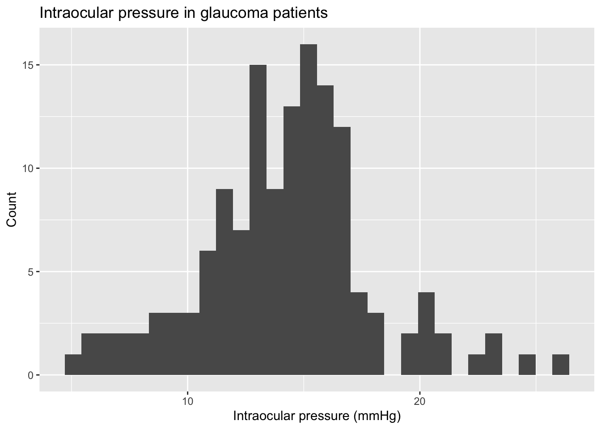
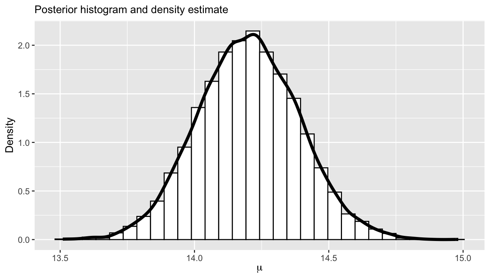

library(tidyverse) # data wrangling and visualization
library(knitr) # format outputAE 01: Monte Carlo sampling
Estimating intraocular pressure
Due date
Application exercises (AEs) are submitted by pushing your work to the relevant GitHub repo. AEs from Tuesday lectures should be submitted by Friday by 11:59pm ET, and AEs from Thursday lectures should be submitted by Sunday at 11:59pm ET. Because AEs are intended for in-class activities, there are no extensions given on AEs.
This AE is a demonstration and you do not have to turn anything in!
- Final
.qmdand.pdffiles pushed to your GitHub repo - Note: For homeworks and exams, you will also be required to submit your final
.pdffile submitted on Gradescope
Introduction
This AE will go through much of the workflow we will use in the course. The main goal is to demo the use of R and RStudio, which we will be using throughout the course both to learn the statistical concepts discussed in the course and to analyze real data and come to informed conclusions.
Learning goals
By the end of the AE, you will…
- Be familiar with the workflow using RStudio and GitHub
- Gain practice writing a reproducible report using Quarto
- Practice version control using GitHub
- Perform some Monte Carlo estimation
Getting Started
Clone the repo & start new RStudio project
- Go to the course organization at github.com/biostat725-sp25 organization on GitHub.
- Click on the repo with the prefix ae-01-. It contains the starter documents you need to complete the AE.
- Click on the green CODE button, select Use SSH (this might already be selected by default, and if it is, you’ll see the text Clone using the web URL.). Click on the clipboard icon to copy the repo URL.
- See the HW 00 instructions if you have not set up the SSH key or configured git.
- In RStudio, go to File \(\rightarrow\) New Project \(\rightarrow\) Version Control \(\rightarrow\) Git.
- Copy and paste the URL of your assignment repo into the dialog box Repository URL. Again, please make sure to have SSH highlighted under Clone when you copy the address.
- Click Create Project, and the files from your GitHub repo will be displayed in the Files pane in RStudio.
- Click
AE 01.qmdto open the template Quarto file. This is where you will write up your code and narrative for the AE.
R and R Studio
Below are the components of the RStudio IDE.

Below are the components of a Quarto (.qmd) file.

YAML
The top portion of your Quarto file (between the three dashed lines) is called YAML. It stands for “YAML Ain’t Markup Language”. It is a human friendly data serialization standard for all programming languages. All you need to know is that this area is called the YAML (we will refer to it as such) and that it contains meta information about your document.
Important
Open the Quarto (.qmd) file in your project, change the author name to your name, and render the document. Examine the rendered document.
Committing changes
Now, go to the Git pane in your RStudio instance. This will be in the top right hand corner in a separate tab.
If you have made changes to your Quarto (.qmd) file, you should see it listed here. Click on it to select it in this list and then click on Diff. This shows you the difference between the last committed state of the document and its current state including changes. You should see deletions in red and additions in green.
If you’re happy with these changes, we’ll prepare the changes to be pushed to your remote repository. First, stage your changes by checking the appropriate box on the files you want to prepare. Next, write a meaningful commit message (for instance, “updated author name”) in the Commit message box. Finally, click Commit. Note that every commit needs to have a commit message associated with it.
You don’t have to commit after every change, as this would get quite tedious. You should commit states that are meaningful to you for inspection, comparison, or restoration.
In the first few assignments we may tell you exactly when to commit and in some cases, what commit message to use. As the semester progresses we will let you make these decisions.
Push changes
Now that you have made an update and committed this change, it’s time to push these changes to your repo on GitHub.
In order to push your changes to GitHub, you must have staged your commit to be pushed. click on Push.
Now let’s make sure all the changes went to GitHub. Go to your GitHub repo and refresh the page. You should see your commit message next to the updated files. If you see this, all your changes are on GitHub and you’re good to go!
R packages
We will begin by loading R packages that we will use in this AE.
Data

The data are on patients with glaucoma from the Rotterdam Ophthalmic Data Repository. Glaucoma is the leading cause of irreversible blindness world wide with over 60 million glaucoma patients as of 2012. Since impairment caused by glaucoma is irreversible, early detection of disease progression is crucial for effective treatment. Patients with glaucoma are routinely followed up and administered visual fields, a functional assessment of their vision. After each visual field test their current disease status is reported as a mean deviation value, measured in decibels (dB). A lower mean deviation indicates worse vision. An important predictor of disease progression is intraocular pressure (IOP), the pressure of fluids inside your eye.
Today, we will focus on the following variable:
iop: intraocular pressure, measured in millimeters of mercury (mmHg)
The goal of this analysis is to use estimate the baseline IOP. The data is available in the ae-01- repo and is called glaucoma.rds.
glaucoma <- readRDS(file = "glaucoma.rds")
glimpse(glaucoma)Rows: 139
Columns: 7
$ id <int> 1, 2, 3, 4, 5, 6, 7, 8, 9, 10, 11, 12, 13, 14, 15, 16, 17,…
$ age <dbl> 51.55616, 76.78356, 46.38356, 42.56712, 68.36438, 56.61644…
$ sex <chr> "F", "F", "F", "M", "F", "F", "F", "F", "M", "M", "M", "M"…
$ iop <dbl> 10.333333, 11.750000, 14.666667, 5.333333, 12.666667, 18.3…
$ baseline_md <dbl> -7.69, -5.38, -22.05, -13.99, -13.02, -7.13, -2.69, -9.43,…
$ severity <chr> "Moderate", "Mild", "Severe", "Severe", "Severe", "Moderat…
$ progression <dbl> -0.190141797, -0.055098961, 0.431682497, 0.218545250, 0.08…Exploratory data analysis
Let’s begin by examining the univariate distributions of IOP. The code to visualize and calculate summary statistics for iop is below.
ggplot(data = glaucoma, aes(x = iop)) +
geom_histogram() +
labs(x = "Intraocular pressure (mmHg)",
y = "Count",
title = "Intraocular pressure in glaucoma patients")
glaucoma |>
summarise(min = min(iop), q1 = quantile(iop, 0.25),
median = median(iop), q3 = quantile(iop, 0.75),
max = max(iop), mean = mean(iop), sd = sd(iop)) |>
kable(digits = 3)| min | q1 | median | q3 | max | mean | sd |
|---|---|---|---|---|---|---|
| 5.333 | 12.292 | 14.333 | 16 | 26.333 | 14.249 | 3.691 |
Posterior estimation
Suppose we are interested in using our data sample to estimate the mean IOP in glaucoma patients. To do this, we assume each a likelihood model for iop, where we define a random variable, \(Y_i\), with likelihood \(Y_i \stackrel{iid}{\sim} N\left(\mu,\sigma^2\right)\). Our goal is to estimate \(\mu\). In this AE, we will assume that \(\sigma^2 = 5\) is known. We will specify the following prior for \(\mu\), \(\mu \sim N(\mu_0, \sigma_{\mu}^2).\)
Under this model, the posterior distribution for \(\mu\) is known in closed form, \(f(\mu|\mathbf{Y}) = N(\mathbb{E}_{\mu},\mathbb{V}_{\mu})\), where
\[\begin{align*} \mathbb{E}_{\mu} &= \left[\frac{\frac{1}{\sigma_{\mu}^2}}{\frac{1}{\sigma_{\mu}^2} + \frac{n}{\sigma^2}}\right] \mu_0 + \left[\frac{\frac{n}{\sigma^2}}{\frac{1}{\sigma_{\mu}^2} + \frac{n}{\sigma^2}}\right] \bar{Y},\\ \mathbb{V}_{\mu} &= \frac{\sigma^2\sigma_{\mu}^2}{n\sigma_{\mu}^2 + \sigma^2}. \end{align*}\]
Since we have the posterior distribution for \(\mu\) in closed form, we can perform inference using Monte Carlo sampling. We will begin by obtaining samples from the posterior. We start by defining the quantities needed to compute the posterior moments.
Y <- glaucoma$iop
n <- length(Y)
sigma_mu2 <- 10
mu0 <- 0
sigma2 <- 5
Y_bar <- mean(Y)We can then compute the posterior moments.
mean_mu <- (1 / sigma_mu2) / ((1 / sigma_mu2) + (n / sigma2)) * mu0 + ((n / sigma2) / ((1 / sigma_mu2) + (n / sigma2))) * Y_bar
var_mu <- (sigma2 * sigma_mu2) / (n * sigma_mu2 + sigma2)Finally, we obtain posterior samples with \(S = 10,000\).
S <- 10000
posterior_mu <- rnorm(S, mean_mu, sqrt(var_mu))We can vizualize the posterior.
data.frame(mu = posterior_mu) |>
ggplot(aes(x = mu)) +
geom_histogram(aes(y = ..density..),
colour = 1, fill = "white") +
geom_density(lwd = 1.5) +
ylab("Density") +
xlab(expression(mu)) +
labs(subtitle = "Posterior histogram and density estimate")
The posterior mean can be computed as follows using Monte Carlo sampling.
mean(posterior_mu)[1] 14.19549To make sure we have sufficient precision, we can compute the Monte Carlo standard error.
sqrt(var(posterior_mu) / S)[1] 0.001897419Exercises
Exercise 1
Compute a one-sided Bayesian p-value for \(\mu\): \(P(\mu < 14 | \mathbf{Y})\) using Monte Carlo sampling. Interpret the results in plain English.
Answer:
# add code hereExercise 2
We can also compute \(P(\mu < 14 | \mathbf{Y})\) using pnorm, since we have the posterior in closed form. Compute the exact probability and compare it to the Monte Carlo estimate given in Exercise 1.
Answer:
# add code hereExercise 3
Compute a 95% confidence interval for \(\mu\). Provide an interpretation for this confidence interval.
Answer:
# add code here
Important
To submit the AE:
- Render the document to produce the PDF with all of your work from today’s class.
- Push all your work to your AE repo on GitHub. You’re done! 🎉
Recall: This AE is a demonstration and nothing needs to be turned in!